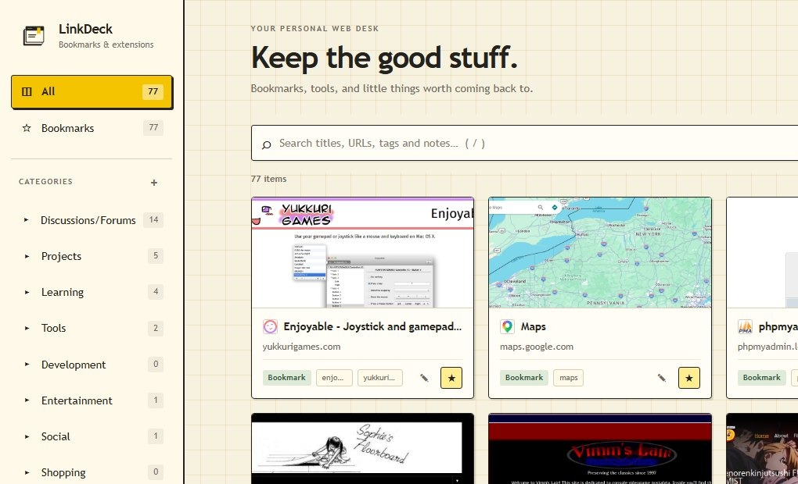
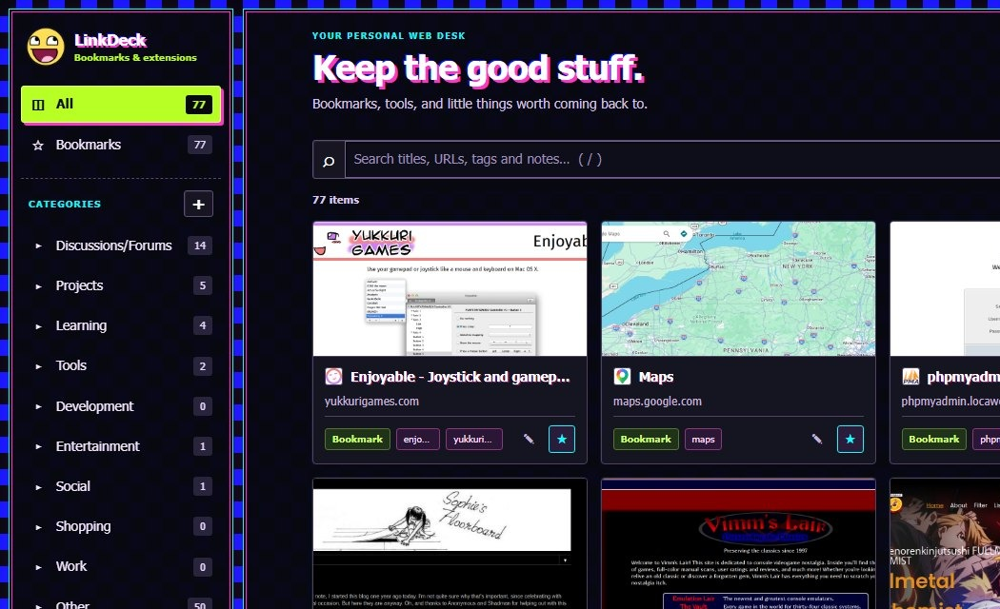
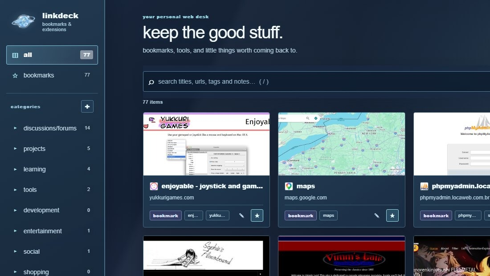
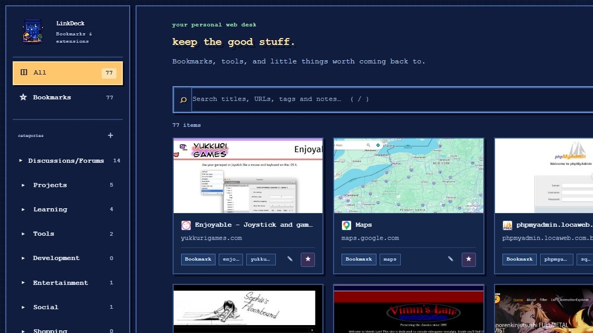
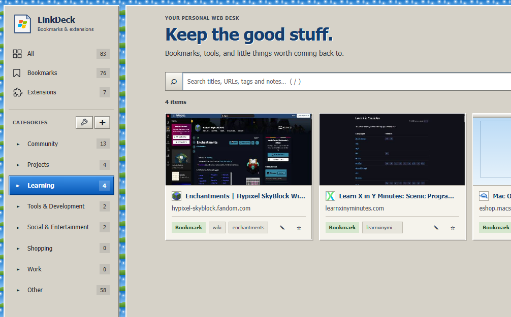
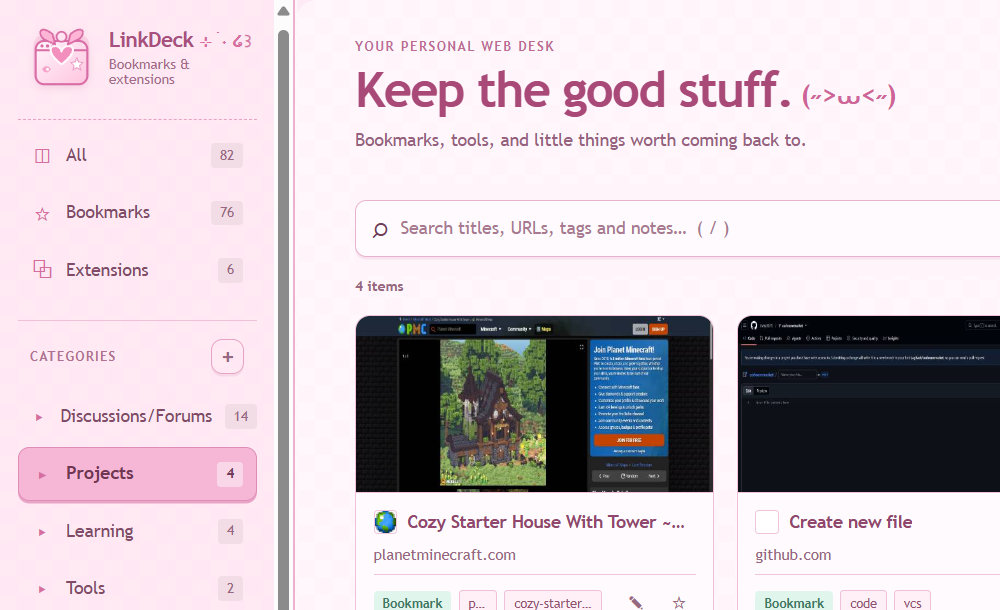

01 / FIND⌕
Find it without digging
Search titles, URLs, tags, and notes. The good link shouldn't disappear into a folder labyrinth.
A home for your open loops
Your bookmarks are full of things you meant to come back to. LinkDeck gives them a visual desk of their own — organized, previewable, and dressed in a style that feels like you.
✳ Made for the links worth keeping. Built to feel like yours.

ORIGINAL
SCENECORE
GXSC
PIXEL NIGHT
WINDOWS 98 / XP
CUTECOREFind your kind of desk.
LinkDeck's themes aren't just a coat of paint. Pick the corner of the internet you want to come home to — from cozy paper to neon chaos.
Warm paper, quiet grid lines, and mustard accents. A calm little desk for everyday links.
A desk, not another pile
Useful little tools to make your bookmarks feel less like storage and more like a collection you actually use.
Search titles, URLs, tags, and notes. The good link shouldn't disappear into a folder labyrinth.
Give links categories, tags, and notes so your future self remembers why you saved them.
Visual cards and optional page previews help you recognize what you saved at a glance.
A growing collection of themes, from retro operating systems to pastel Cutecore — with more styles on the way. Your bookmarks stay yours.
Switch grid and list views, favorite links, import or export notes, and optionally reach installed extension shortcuts.
Your bookmark organization, notes, tags, preferences, and local previews stay in your browser. Online previews are optional.
No mystery box
LinkDeck has no account system or its own analytics server. Most of what you save stays in browser storage. One important exception: online thumbnails send the URLs you choose to preview to thum.io when that optional feature is enabled.
Read the full privacy policy ↗Bookmarks, notes, tags, categories, preferences, and locally captured previews are stored locally.
Turn them off in Settings if you don't want bookmark URLs sent to the thumbnail provider.
There is no remote account or LinkDeck-operated analytics service.
The beginning of the desk
The first LinkDeck release: visual bookmarks, practical organization, and a set of distinct themes.
Found a rough edge?
Bug reports, theme ideas, and thoughtful feedback are all welcome. If something breaks, tell me what happened.
Look under the hood, follow development, or contribute a fix.
GitHub repository ↗Something not working? Have a feature or theme request? Open an issue.
Issues & feature requests ↗Have a quick question or suggestion? You can reach me directly on Discord.
For bugs that may affect other users, GitHub Issues is the best place to report them. For direct contact, add @lagb2ck on Discord.